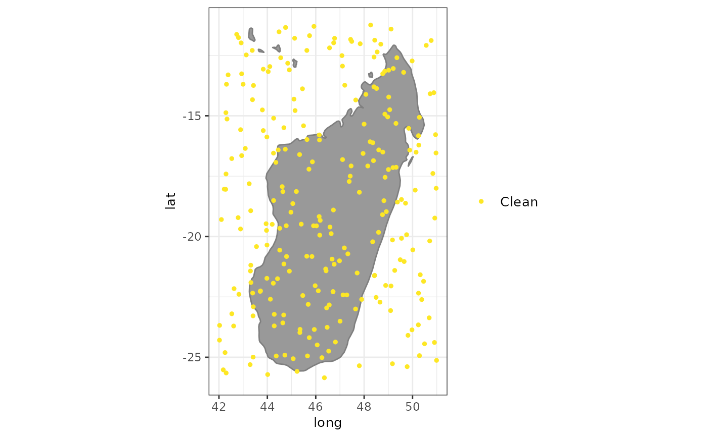

A set of plots to explore objects of the class spatialvalid. A plot
to visualize the flags from clean_coordinates
# S3 method for spatialvalid
plot(
x,
lon = "decimalLongitude",
lat = "decimalLatitude",
bgmap = NULL,
clean = TRUE,
details = FALSE,
pts_size = 1,
font_size = 10,
zoom_f = 0.1,
...
)an object of the class spatialvalid as from
clean_coordinates.
character string. The column with the longitude coordinates. Default = “decimalLongitude”.
character string. The column with the latitude coordinates. Default = “decimalLatitude”.
an object of the class SpatVector or sf used as
background map. Default = ggplot::borders()
logical. If TRUE, non-flagged coordinates are included in the map.
logical. If TRUE, occurrences are color-coded by the type of flag.
numeric. The point size for the plot.
numeric. The font size for the legend and axes
numeric. the fraction by which to expand the plotting area from the occurrence records. Increase, if countries do not show up on the background map.
arguments to be passed to methods.
A plot of the records flagged as potentially erroneous by
clean_coordinates.
exmpl <- data.frame(species = sample(letters, size = 250, replace = TRUE),
decimalLongitude = runif(250, min = 42, max = 51),
decimalLatitude = runif(250, min = -26, max = -11))
test <- clean_coordinates(exmpl, species = "species",
tests = c("sea", "gbif", "zeros"),
verbose = FALSE)
summary(test)
#> .val .zer .gbf .summary
#> 0 0 0 0
plot(test)
